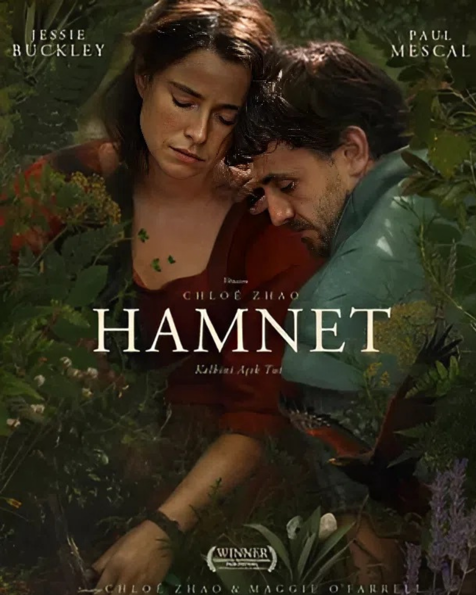

Düşüncenin Sınırlarında
Sorular
cevaplardan
daha derin
Bir masal biter, merak başalar...

Devam Et 👇
Beklenmedik bağlantıların peşine düş.
Düşüncenin Sınırlarında
Bir masal biter, merak başalar...
Karanlığın yavaş yavaş şekil aldığı, gölgelerin tarihin üzerine bir kefen gibi serildiği bu rehberde Pan mitinin derinliklerine iniyoruz. Arketipsel semboller, kolektif bilinçdışı ve masalın arkeolojisi…
Yazının tamamına ulaşmak için Patreon'a abone olman gerekiyor.

Enkidu'dan Kızıl Başlıklı Kız'a, mağara ritüellerinden modern anlatıya — masalın kökenlerini evrimsel antropoloji ve mitoloji üzerinden izleyen kapsamlı bir rehber.
Patreon üyeleri için özel içerik. Kitabı Shopier'dan da edinebilirsin.

Ücret karşılığı dert dinleme hizmetleri nasıl işliyor? Armut.com'daki ilanlar, yalnızlık ekonomisi, ücretler ve uzmanlık tartışmaları incelendi.
Haberi oku ↗
Ücret karşılığı dert dinleme hizmetleri nasıl işliyor? Armut.com'daki ilanlar, yalnızlık ekonomisi, ücretler ve uzmanlık tartışmaları incelendi.
Haberi oku ↗
Antik Smyrna'dan NYT'ye uzanan bulmaca ekonomisi: Türkiye bu dönüşümü neden yapamadı?
Makaleyi oku ↗
Yapay zeka sistemlerinin içine yerleştirilen varsayılan "gazeteci" kimliği ne anlama geliyor? Kimin sesi duyuluyor, kimin silinip gidiyor?
Makaleyi oku ↗ Tümü ⤵️


Eve Dönen Odysseus Serisi (1. Bölüm) Christopher Nolan'ın "The Odyssey" filmi vizyona girdi, ama asıl hikaye 3000 yıl önce, adı bile belirsiz kör bir ozanla başlıyor. Homeros gerçekten var mıydı, İlyada ile Odysseia'yı gerçekten o mu yazdı?

Orhan Kemal'in edebiyatında işçi sınıfı ve 1 Mayıs'ın yalnızca bir tarih değil, bir dünya görüşü olduğunu keşfediyoruz.

Vedat Türkali'nin toplumcu gerçekçilik geleneğini aşan bu romanında aşk, yalnızlık ve varoluş iç içe geçiyor.
Andy Weir'ın romanında yalnız bir astronotun hayatta kalma mücadelesi ve işbirliğinin insan doğasındaki yeri.

Orhan Pamuk'un koleksiyon ve obsesyon üzerine kurulu bu romanında İstanbul, bellek ve kaybın izini sürüyoruz.

Siberpunk edebiyatının öngördüğü distopik gelecek bugün ne kadar gerçek? Algoritma, gözetim ve özgürlük üzerine.


Film
Otuz iki pikselin mirası
Bir iflasın eşiğinden doğan kırmızı şapkalı bir figür, nasıl olur da bir kültürün ortak miti haline gelir? Mario'nun doğuşu, kahramanlık mitleri ve bir kuşağın hafızası üzerine.
Okumak için tıkla →
İnceleme
Vedat Türkali – Bir Gün Tek Başına
"Toplumcu Gerçekçilik" etiketinin dar kalıplarını kıran bir dehanın varoluşsal izdüşümü.
Merceği Aç →Reklamsız, bağımsız içerik üretmek ancak sizin desteğinizle mümkün.


Videoları paylaşmak da büyük katkı ✦